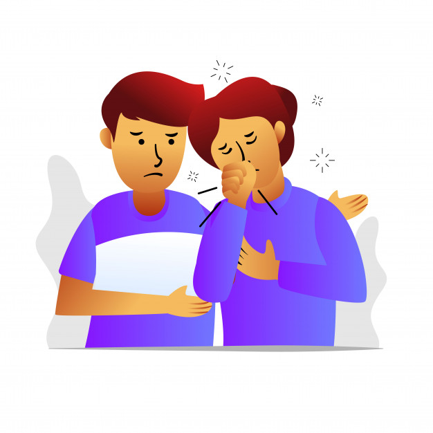

Que es el contagio
El contagio no es mas que la transmisión de una enfermedad a traves del contacto. Una enfermedad contagiosa, por lo tanto, es aquella que una persona enferma puede transmitir a una persona sana.
El contagio de una enfermedad que se produce cuando un individuo sano entra en contacto directo o indirecto con otro que padece una determinada enfermedad infecciosa. Entre las enfermedades contagiosas pueden nombrarse aquellas que se conocen como exantemáticas, caracterizadas por una erupción en la piel.
se conoce como contagio a todo tipo de transmisión que se desarrolla mediante influencias de diversas clases. Es posible contagiar hábitos, costumbres, tendencias, actitudes, etc.: “El efecto contagio de la crisis europea llegará a América tarde o temprano”, “El cantante logró contagiar su entusiasmo al público presente en la sala”.

Como te puedes contagiar de coronavirus
* Teniendo en cuenta que todavia no hay un presicion para el contagieo del esta enfermedad, se ha hecho anologia por otras infecciones y al parecer la tracsmicion del coronavirus tiene que ver con el contacto de animales infectados o tambien por contacto de persona que haya contraido la enfermedad.
* el contagio sólo se puede producir a través de las secreciones que se generan con la tos o el estornudo de la persona enferma. Estas secreciones infectarían a otra persona si entran en contacto con su nariz, sus ojos o su boca. La contagiosidad depende de la cantidad del virus en las vías respiratorias. La transmisión por el aire a distancias mayores de un metro es muy poco probable.
* Un objeto puede resultar contaminado por el coronavirus si una persona infectada tose o estornuda encima del mismo o lo toca. con las correctas medidads de lavarses las manos , el riesgo de infectarse con el nuevo coronavirus (covid-19) por contacto con objetos, como monedas, billetes o incluso tarjetas de crédito, es muy bajo”, han dicho los infectologo.